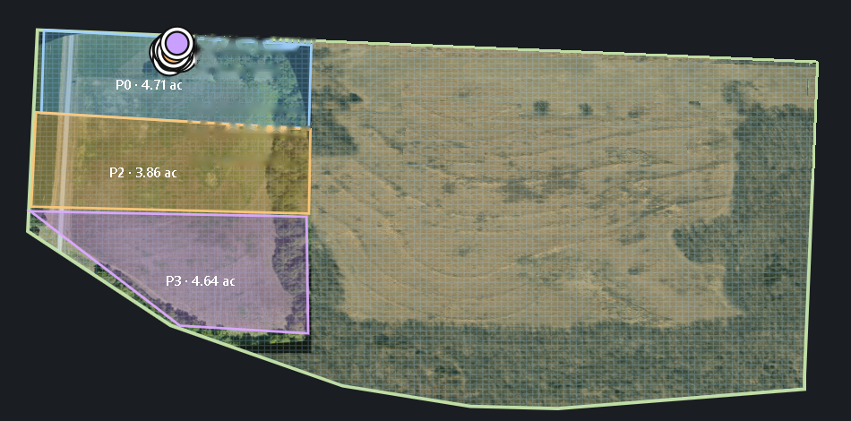
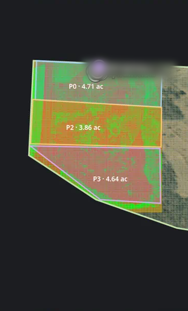
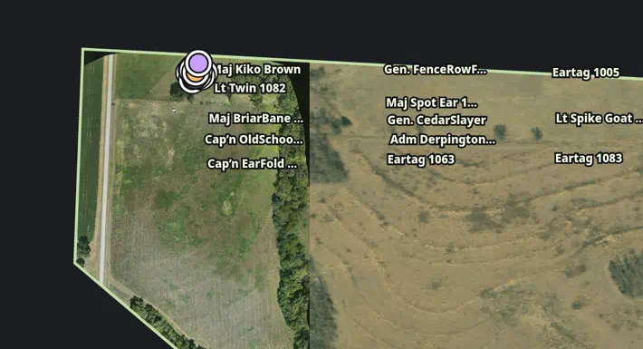

SAGE is an open-source farm digital twin. It layers drone maps, livestock (goat tracking and paddocks), fields, and sensors in one view instead of separate apps, with custom integrations where a farm needs them.
SAGE is live today with real Elm Spring farm data.



FarmersSee fields, livestock, drone maps, and sensors together.
Colleges and ag programsGet equipment, drone mapping, and training for instructors and students.
ResearchersProcess drone data and keep farm data layered in one place.
We are currently working with Missouri S&T, whose multirotor team is developing an open-source drone workflow that will tie into SAGE.
ALLSEEING Research Services is based in Missouri and founded by Scott Abney.